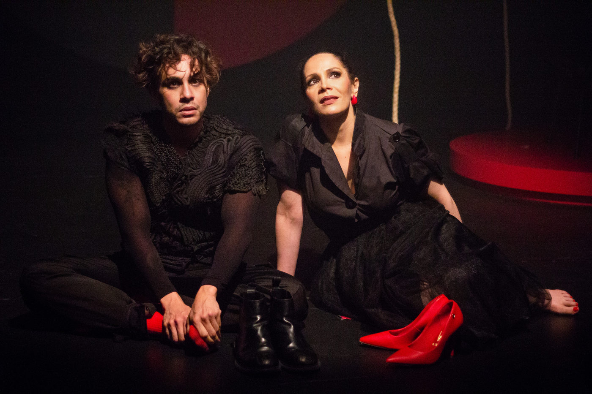

Foto — Victor Miranda
Teatro
"Órion" volta para nova temporada e discute ansiedade na sociedade contemporânea
Espetáculo estrelado por Caio Blanco explora, de forma sensível, as questões da ansiedade e a busca por equilíbrio na vida moderna.…